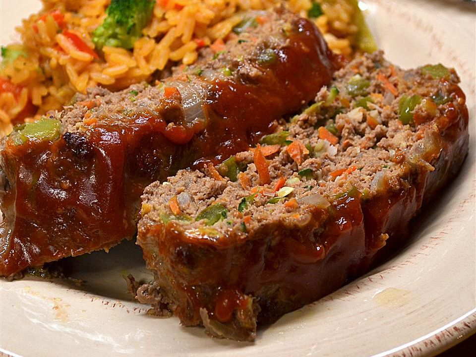

Momma's Healthy Meatloaf

Description
This healthy meatloaf recipe is a simplified version of a family favorite.
Ingredients
- cooking spray
- 1 tablespoon olive oil
- 1 green bell pepper, diced
- ½ cup diced sweet onion
- ½ teaspoon minced garlic
- 1 pound extra-lean (95%) ground beef
- 1 cup whole wheat bread crumbs
- ¾ cup shredded carrot
- ¾ cup shredded zucchini
- 2 large eggs
- salt and ground black pepper to taste
- ¼ cup ketchup, or to taste
Steps
- Preheat the oven to 400 degrees F (200 degrees C).
Coat a 9x5-inch loaf pan with cooking spray.
- Heat olive oil in a large skillet over medium heat; cook and stir bell pepper and onion
in hot oil until onion is translucent and bell pepper is softened, 5 to 10 minutes.
Add garlic and cook until fragrant, 1 to 2 minutes. Remove the skillet from heat.
- Combine ground beef, bread crumbs, carrot, zucchini, eggs, salt, pepper, and bell
pepper mixture in a large bowl; mix well using your hands. Press mixture into the
prepared loaf pan.
- Bake in the preheated oven until no longer pink in the center, 35 to 40 minutes.
An instant-read thermometer inserted into the center should read at least 160 degrees F
(70 degrees C). Spread ketchup over meatloaf and continue baking until bubbling,
about 5 minutes more.